📑 文章目录（9 节）
本文将附带谱面图片，讲解在段位认定模式中突破《灼熱Beach Side Bunny（ANOTHER）》的技巧。内容涵盖曲目数据、容易掉血的段落、将 24 分转盘（皿）改搓成 16 分的逆馅蜜方法以及日常练习方式。
由于 SP 皆传的推荐选项为 1P 正规、2P MIRROR（镜），因此本文也将以这一选项为前提展开讲解。
- 灼热的 SPA 拥有多达 667 枚转盘（皿），是一张以连皿为核心的谱面。在段位认定中过关并不需要什么特殊对策
- 真正需要的是皿地力以及单手处理键盘的能力。多刷各种不同的皿曲就是最大的捷径
- 血槽掉得最凶的是第 2 次交互段（第 46～53 小节）。尾声最后阶段也会变得非常忙碌
- 交互段中的 24 分转盘，只要通过逆馅蜜改搓成 16 分就会简单很多
- 在还无法过关的阶段，切忌只盯着灼热死磕粘着
灼熱Beach Side Bunny 的曲目数据
| 曲师 | DJ Mass MAD Izm* |
|---|---|
| 初出版本 | beatmania IIDX 18 Resort Anthem |
| BPM | 153 |
| SP ANOTHER | ☆12・1,719 音符（其中转盘 667 枚） |
| BEGINNER | NORMAL | HYPER | ANOTHER | |
|---|---|---|---|---|
| SP | ☆3 296 | ☆7 564 | ☆10 1,024 | ☆12 1,719 |
| DP | － | ☆6 542 | ☆10 933 | ☆12 1,692 |
灼熱Beach Side Bunny 长期占据着 SP 皆传第 2 曲的位置。截至 2026 年 11 月，街机（ZINRAI）皆传的曲目为 Somnidiscotheque・灼熱Beach Side Bunny・卑弥呼・冥，INFINITAS 皆传为 嘆きの樹・灼熱Beach Side Bunny・卑弥呼・冥，两边都是由灼热坐镇第 2 曲。
这是一张由键盘交互（Trill）与连皿交织而成的谱面，以极高的转盘密度著称。笔者本身很擅长灼热，SPA 已经打出过 AAA 评价以及 BP1（全曲仅断过 1 次连击）。
谱面流程与掉血点
- 开场前段：相对简单。要趁这里把血槽回满并攒好血量
- 第 30～37 小节：第 1 次交互段
- 第 46～53 小节：第 2 次交互段。血槽掉得最凶的地方
- 尾声最后阶段：节奏变得非常紧凑忙碌，千万不要在最后关头掉以轻心
在段位认定中，能否在第 2 次交互段保住血量就是胜负关键。两处交互段的具体按键与搓盘方式，都会在下文的分段攻略中详细说明。
【挑战灼热之前】多打各种不同的皿曲
在皆传中过不去灼热的玩家，首先需要消除对皿曲的抵触和畏难心理。在正式攻略灼热之前，先从简单的曲目入手，重新审视自己搓盘的基本动作吧。只要是皿曲，哪一首都行，关键在于把练习量堆上去。
连皿如果只靠小指去搓，稳定性会非常差。请务必有意识地至少用中指、无名指、小指这 3 根手指一起搓盘。另外，虽然在 LIGHTNING MODEL 机台上手腕搓盘（手首皿）也能充分触发判定，但遇到连皿时，改用常规手势直接搓盘还是要简单得多。
可作为灼热对策练习的皿曲示例
只需要一边有意识地做到“减少失误（Miss）”“能用单手按的键盘部分就尽量单手去按”，一边把下面这些曲子多轮刷几遍，绝大多数玩家应该就能顺利过掉灼热了。当然，玩不在这个列表里的其他皿曲也完全没问题。
- 199024club -Re:BounceKiller-
- bass 2 bass
- BLACK.by X-Cross Fade
- Bounce Bounce Bounce
- Catch Me
- CHECKING YOU OUT
- D.A.N.C.E.!
- Digitank System
- Just a Little Smile
- naughty girl@Queen’s Palace
- Plan 8
- Red. by Full Metal Jacket
- SAMURAI-Scramble
- SCREAM SQUAD
- Snake Stick
- TROOPERS
- 灼熱Beach Side Bunny（HYPER）
千万注意，在还没能力过掉灼热的阶段，绝对不要只盯着灼热一首死磕粘着。那样往往只会练出一身坏癖，最后得不偿失。
第 30～37 小节：第 1 次交互段
由于开场前段比较简单，我们直接从难点段落看起。
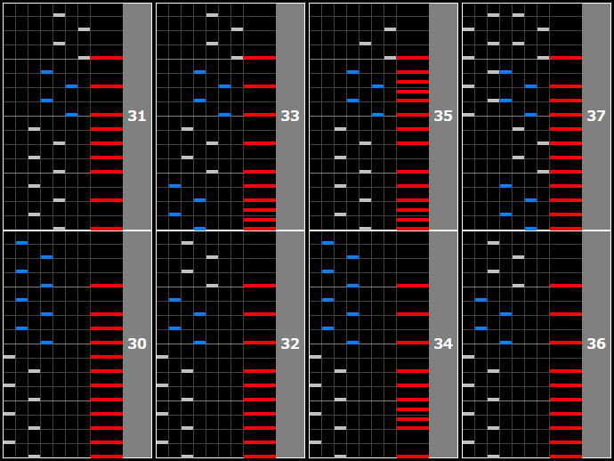
在第 1 次交互段中，原则上除了第 37 小节结尾处之外的键盘，都尽量想办法用单手处理。如果经常出现键盘和转盘节奏脱节，或者疯狂吃 BAD 连爆（BAD ハマり）的情况，请刻意把注意力集中在交互起手处的键盘与转盘同时押上，看准了再下键。
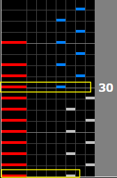
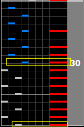
接着，第 33～35 小节中混入了 24 分转盘的复杂节奏，只要通过逆馅蜜改搓成 16 分转盘，就能更容易和键盘交互对上拍子，难度会大幅下降。
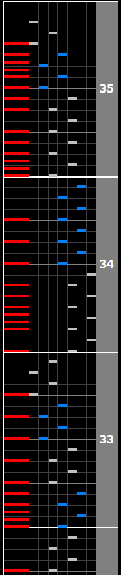
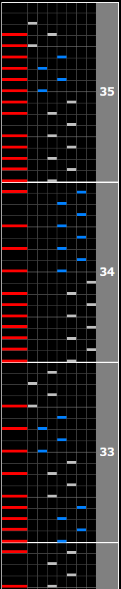
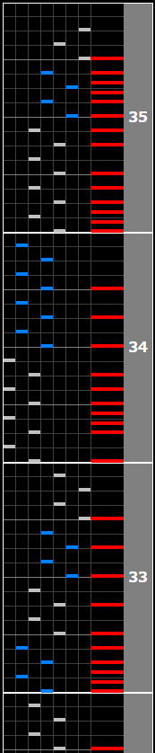
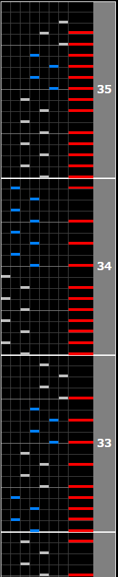
第 33、34 小节的感觉是：比 24 分转盘原本的起手提前 1 个 16 分音符切入，然后顺势保持 16 分的节奏直接搓下去。第 35 小节的感觉则是：全程维持 16 分节奏，并在结尾处多补搓 1 枚。
这套逆馅蜜不仅适用于冲刺 HARD、EX-HARD（EXH）和 Full Combo，对刷高分也非常有效，请务必让身体彻底记住这种手感。
第 46～53 小节：第 2 次交互段
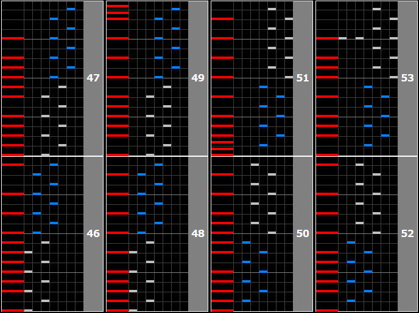
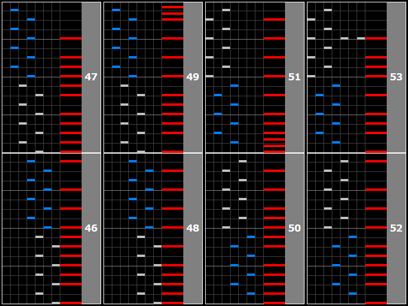
段位认定中血量掉得最凶的地方就是这里。第 2 次交互段的核心思路与第 1 次基本相同：同样要把注意力放在交互起手处的键盘与转盘上，并将第 49～51 小节的 24 分转盘直接用逆馅蜜改搓成 16 分，处理起来就会轻松很多。
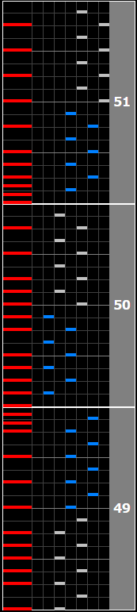
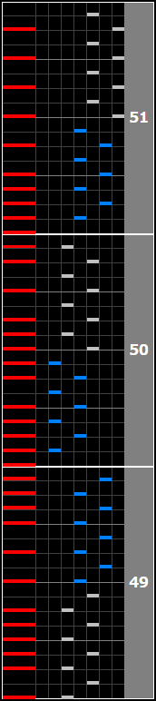
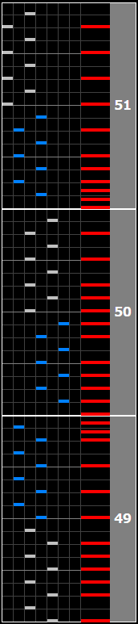
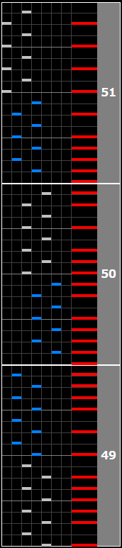
单手处理能力也可以通过 DP 或单手玩法来提升
稍微岔开一点话题：平时玩一玩 DP 或者单手模式，能够非常有效地锻炼单手处理键盘的能力，从而让所有皿曲都变得更轻松。如果正处于瓶颈期，不妨抱着换换心情的态度尝试入坑 DP 看看。
常见问题
灼熱Beach Side Bunny 是哪个段位的课题曲？
是 SP 皆传的第 2 曲。截至 2026 年 11 月，无论是在街机（ZINRAI）还是在 INFINITAS 的皆传中，它都位于第 2 曲。
灼熱Beach Side Bunny 一共有多少枚转盘（皿）？
SP ANOTHER 共有 667 枚转盘。全曲总共 1,719 个音符，其中将近四成都是转盘。
只有灼热过不去，应该专门多练灼热吗？
比起死练灼热本身，广泛去打其他各种皿曲反而是更快的捷径。什么皿曲都可以。只反复刷灼热这一首，非常容易沾上坏癖。
打灼热可以用手腕搓盘（手首皿）吗？
在 LIGHTNING MODEL 机台上手腕搓盘（手首皿）虽然也能触发判定，但连皿还是正常用手搓要简单得多。打灼热时，推荐用中指、无名指、小指三根手指一起来搓盘。
总结
要在段位认定中突破灼热，其实并不需要什么特殊对策。虽然第 2 次交互段是最容易掉血的地方，但真正要练的始终还是最正统的那两件事：
- 提升单手处理键盘的能力
- 提升皿地力
现在的皿曲练习素材非常丰富，请先从其他更简单的皿曲练起，打好搓盘手势和单手处理的基础。任何皿曲都可以，推荐曲目示例已整理在本文上方。
把交互段的转盘改搓成 16 分的逆馅蜜练成肌肉记忆后，日后无论是冲 EX-HARD（EXH）还是刷分都会派上大用场。关于皆传其他课题曲的攻略，以及从十段冲击皆传的练习规划，可以参考以下文章。